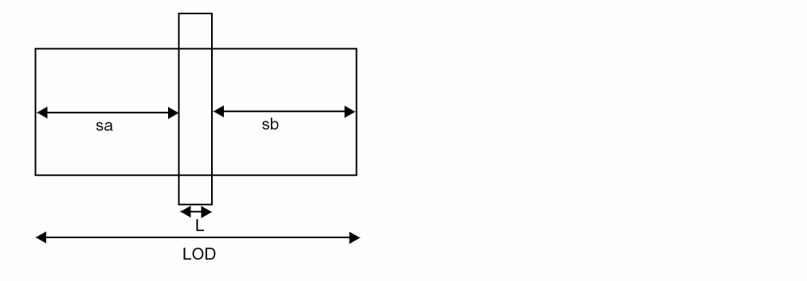

LOD Model
The following diagram displays the LOD instance geometry parameters sa and sb.

Stress Effect
where μeffo, υsato are low field mobility, saturation velocity at SAref, SBref.
Well Proximity Effect
SC is defined as the distance to a single well edge used in calculations of SCA, SCB, and SCC when layout information is not available. If SCA, SCB, and SCC are not given, their estimation is as follows:
Related Topics
BSIM3v3 Level-11 Model (bsim3v3)
Differences between BSIM3v3 Subversions
Return to top